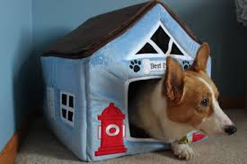

Rehome / Housing Problems
Whether you’re moving across the country or just around the block, relocation can be overwhelming. However, the following tips may help you avoid having to leave your dog behind:
Tips for Bringing Your Corgi to Your New House or Apartment
- If you rent and you’re worried about finding a landlord who allows pets, contact a humane society or animal shelter in your area. These organizations often have lists of local pet-friendly housing options. You can also try visiting a site dedicated to helping people find apartments and rental homes where pets are allowed.
- Make your dog her own “resume” to give to prospective landlords when you submit rental applications. Include a description of her personality, her history and a charming photo. Many landlords are impressed by a list of previously taken obedience classes or certifications, such as therapy-dog certification or the Canine Good Citizen (CGC) designation, so be sure to include those. You can also offer letters of recommendation from past landlords, trainers or your dog’s veterinarian.
- Consider asking a friend or family member to temporarily keep your dog if you feel that you can’t give her the attention she needs during your move. After you’re settled in, your dog can join you in your new home.
- If you have no other alternatives, you can board your dog at a kennel or vet clinic until you’ve completed your move.
